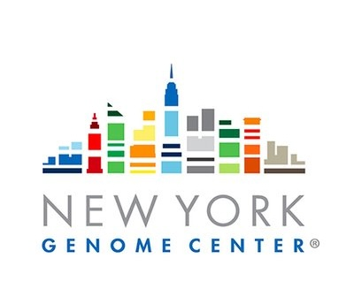
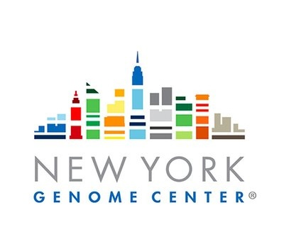

Left: Visualization of RNA transcript embeddings throughout Orthrus training. Transcripts are randomly distributed in embedding space prior to training, and the Orthrus loss function pulls transcripts related through splicing and orthology close, while pushing unrelated transcripts apart. Right: Orthrus is trained using the DCL loss function.
Orthrus: Towards Evolutionary and Functional RNA Foundation Models
1. Vector Institute
2. DCS, University of Toronto 3. CSBP, Sloan Kettering Institute
3. CSBP, Sloan Kettering Institute
4. NY Genome Center  5. Systems Biology, Columbia
6. ECE, University of Toronto
7. Peter Munk Cardiac Center 
*Indicates Equal Contribution ‡Indicates Equal Advising
4. NY Genome Center  5. Systems Biology, Columbia
6. ECE, University of Toronto
*Indicates Equal Contribution ‡Indicates Equal Advising